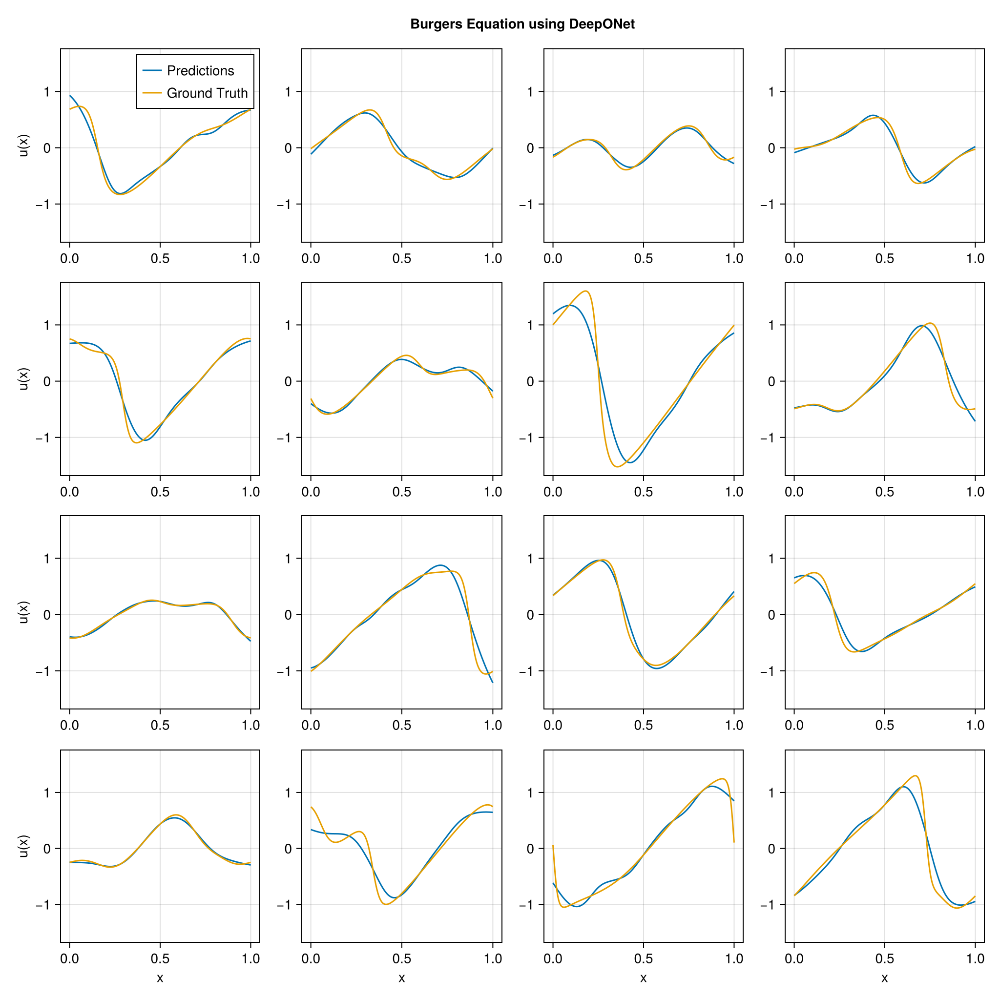

using DataDeps, MAT, MLUtils
using PythonCall, CondaPkg # For `gdown`
using Printf
const gdown = pyimport("gdown")
register(
DataDep(
"Burgers",
"""
Burgers' equation dataset from
[fourier_neural_operator](https://github.com/zongyi-li/fourier_neural_operator)
mapping between initial conditions to the solutions at the last point of time \
evolution in some function space.
u(x,0) -> u(x, time_end):
* `a`: initial conditions u(x,0)
* `u`: solutions u(x,t_end)
""",
"https://drive.google.com/uc?id=16a8od4vidbiNR3WtaBPCSZ0T3moxjhYe",
"9cbbe5070556c777b1ba3bacd49da5c36ea8ed138ba51b6ee76a24b971066ecd";
fetch_method=(url, local_dir) -> begin
pyconvert(String, gdown.download(url, joinpath(local_dir, "Burgers_R10.zip")))
end,
post_fetch_method=unpack
)
)
filepath = joinpath(datadep"Burgers", "burgers_data_R10.mat")
const N = 2048
const Δsamples = 2^3
const grid_size = div(2^13, Δsamples)
const T = Float32
file = matopen(filepath)
x_data = reshape(T.(collect(read(file, "a")[1:N, 1:Δsamples:end])), N, :, 1)
y_data = reshape(T.(collect(read(file, "u")[1:N, 1:Δsamples:end])), N, :, 1)
close(file)
x_data = permutedims(x_data, (2, 1, 3))
grid = reshape(T.(collect(range(0, 1; length=grid_size)')), :, grid_size, 1)
1×1024×1 Array{Float32, 3}:
[:, :, 1] =
0.0 0.000977517 0.00195503 … 0.997067 0.998045 0.999022 1.0
using Lux, NeuralOperators, Optimisers, Zygote, Random
using LuxCUDA
const cdev = cpu_device()
const gdev = gpu_device()
deeponet = DeepONet(;
branch=(size(x_data, 1), ntuple(Returns(32), 5)...),
trunk=(size(grid, 1), ntuple(Returns(32), 5)...),
branch_activation=tanh,
trunk_activation=tanh
)
ps, st = Lux.setup(Random.default_rng(), deeponet) |> gdev;
((branch = (layer_1 = (weight = Float32[-0.07515076 -0.004049231 … 0.08784926 -0.049082883; 0.083856896 0.016281707 … -0.018738907 0.08204558; … ; -0.009283518 -0.047139637 … -0.037689377 0.019453112; 0.038546104 -0.012940551 … 0.030889502 0.009953438], bias = Float32[-0.015134282, -0.011135906, -0.02625722, 0.017406896, 0.023729697, 0.021539118, 0.000671003, -0.011458039, 0.022196308, 0.027666852 … 0.020464078, 0.004076414, -0.009574283, 0.021230422, -0.028498314, 0.011511296, -0.018823236, 0.03120542, 0.0099865645, 0.011185292]), layer_2 = (weight = Float32[0.33949476 -0.19545422 … -0.36736453 -0.35313722; -0.28904724 0.3412096 … 0.1428356 0.4193222; … ; 0.034163557 -0.33365726 … -0.016430218 -0.34594485; -0.24924323 0.11971817 … -0.17814599 -0.25099736], bias = Float32[-0.050423753, -0.10990977, 0.12489281, 0.06262217, 0.13901752, -0.012733153, 0.113983184, 0.044781953, 0.12839812, -0.074098624 … -0.1749248, -0.016198635, -0.12945558, 0.050762404, 0.16615923, -0.1328122, -0.15988384, 0.17417465, -0.1395997, -0.11973483]), layer_3 = (weight = Float32[-0.2516142 -0.4306173 … -0.3524807 0.06950686; -0.09487861 0.40482795 … 0.30622253 0.032998163; … ; 0.28597197 0.44286594 … 0.2375769 0.41257823; -0.257873 0.50621647 … 0.32055455 0.38483495], bias = Float32[-0.011387088, -0.07789636, -0.016197624, -0.081196494, -0.10094923, 0.09170307, 0.008601814, 0.118379034, -0.1271223, 0.11459349 … -0.1491361, -0.15273094, 0.16718987, -0.12410335, -0.1421211, 0.016051058, 0.03047942, -0.04684576, 0.11796452, -0.1380543]), layer_4 = (weight = Float32[0.07385404 0.37294322 … 0.11921003 0.25446868; -0.42806807 0.42780423 … 0.46961793 0.11195019; … ; -0.1911509 0.13963892 … -0.04180409 -0.44111872; 0.3823992 -0.43558154 … -0.44790393 -0.4064609], bias = Float32[0.061937258, -0.13574652, -0.08810082, 0.00972882, 0.17381728, 0.1451038, 0.14373931, -0.094842486, -0.04721128, -0.1001148 … 0.07878692, -0.0015712345, -0.02584687, -0.095140316, -0.12691139, -0.1529705, -0.0020404765, -0.16443697, -0.16717348, 0.04527311]), layer_5 = (weight = Float32[-0.055530265 0.0065443474 … -0.25786012 0.25096738; 0.026498264 -0.16783652 … 0.040129244 0.15532963; … ; -0.10923471 -0.20715293 … 0.015654298 -0.06026015; -0.09742615 0.07293617 … -0.013428658 0.26604328], bias = Float32[0.034022223, 0.028739387, -0.14056796, -0.038115397, -0.10061338, -0.05523551, -0.16129005, 0.15613715, -0.15336189, 0.13880572 … -0.045801193, -0.11832964, 0.10509378, -0.043071404, -0.041348398, 0.03469202, -0.02646428, 0.09489087, 0.05841336, -0.1338871])), trunk = (layer_1 = (weight = Float32[0.2407981; -0.81143904; … ; -1.4339417; -1.6917654;;], bias = Float32[-0.442747, -0.53758883, 0.29762578, 0.07208848, 0.088546395, 0.73689246, 0.9082693, -0.7834904, -0.0475595, -0.63761806 … -0.99684036, 0.00236547, -0.25388777, -0.16809142, -0.8834053, 0.72103715, 0.47900486, 0.0770849, -0.63021064, -0.5227264]), layer_2 = (weight = Float32[-0.26692533 0.12348323 … 0.18678524 -0.42718652; -0.25798377 -0.4025254 … -0.257452 0.09492338; … ; -0.42181656 0.4996193 … 0.40749374 0.23826359; -0.010859369 0.14727068 … 0.46505535 0.2810297], bias = Float32[-0.14917588, 0.159086, -0.0040048147, -0.17269112, -0.062742345, 0.107647285, -0.033539724, 0.034262165, -0.15535979, -0.13282971 … 0.078559786, 0.0029724697, 0.032637697, 0.06309908, 0.09833252, 0.08750333, 0.10823703, 0.15171574, -0.15752073, 0.17332517]), layer_3 = (weight = Float32[0.39174005 0.066894054 … -0.02943495 0.33198982; -0.34318238 -0.13220084 … 0.48861784 0.26716417; … ; -0.119028926 -0.078631006 … 0.08992996 0.43470302; -0.25056168 -0.31682506 … 0.09369399 0.06474133], bias = Float32[0.12522438, -0.028231476, 0.06805519, -0.017475137, 0.073600955, 0.104859084, -0.05632703, 0.12642857, -0.09892672, 0.1443116 … -0.037126992, -0.16245635, 0.0005535567, -0.06891992, -0.0421793, -0.11627116, -0.15089005, 0.044725478, -0.13948491, 0.002328824]), layer_4 = (weight = Float32[-0.17421795 -0.48138043 … 0.23095764 0.21378891; -0.018508725 -0.1861137 … -0.23707801 -0.5090861; … ; 0.36330283 -0.33725816 … 0.28743643 -0.23448375; -0.46114507 -0.48978567 … -0.10215542 -0.26692766], bias = Float32[-0.11464404, -0.098243415, 0.15346633, -0.13636474, 0.098420076, 0.025779499, 0.16264167, -0.09719508, 0.0025924947, 0.13930099 … -0.015754998, -0.085340455, -0.1113619, 0.16488571, 0.16521603, 0.049061988, 0.10775841, 0.14652526, -0.11057106, 0.09192721]), layer_5 = (weight = Float32[-0.01574741 0.28794408 … -0.17555058 0.27661848; -0.011038623 -0.17331761 … 0.022967668 -0.18010892; … ; 0.19282389 0.2331331 … -0.27338856 0.2100554; 0.14336412 0.09068639 … 0.25864223 -0.06472877], bias = Float32[-0.1351751, 0.06879594, -0.15510902, -0.1577896, 0.08429294, -0.04292347, -0.11088758, 0.1312617, 0.016161947, -0.15569867 … -0.16872561, -0.1725287, -0.11823158, 0.13386483, 0.14321186, -0.07627901, -0.024714174, -0.1570566, -0.07797228, -0.032021765])), additional = NamedTuple()), (branch = (layer_1 = NamedTuple(), layer_2 = NamedTuple(), layer_3 = NamedTuple(), layer_4 = NamedTuple(), layer_5 = NamedTuple()), trunk = (layer_1 = NamedTuple(), layer_2 = NamedTuple(), layer_3 = NamedTuple(), layer_4 = NamedTuple(), layer_5 = NamedTuple()), additional = NamedTuple()))
x_data_dev = x_data |> gdev
y_data_dev = y_data |> gdev
grid_dev = grid |> gdev
function loss_function(model, ps, st, ((v, y), u))
û, stₙ = model((v, y), ps, st)
return MAELoss()(û, u), stₙ, (;)
end
function train_model!(model, ps, st, data; epochs=5000)
train_state = Training.TrainState(model, ps, st, Adam(0.0001f0))
for epoch in 1:epochs
_, loss, _, train_state = Training.single_train_step!(
AutoZygote(), loss_function, data, train_state)
if epoch % 25 == 1 || epoch == epochs
@printf("Epoch %d: loss = %.6e\n", epoch, loss)
end
end
return train_state.parameters, train_state.states
end
ps_trained, st_trained = train_model!(
deeponet, ps, st, ((x_data_dev, grid_dev), y_data_dev))
((branch = (layer_1 = (weight = Float32[-0.074102096 -0.003121505 … 0.08919119 -0.047895547; 0.08107006 0.013154233 … -0.020912468 0.07957678; … ; -0.0030515902 -0.04139496 … -0.030550694 0.026150797; 0.03516895 -0.015925443 … 0.026752321 0.0061909864], bias = Float32[-0.035631347, -0.13917473, -0.0127642155, 0.0060651232, 0.063689254, -0.0038685217, -0.050906897, -0.046329305, 0.058457658, 0.17442392 … -0.019241609, 0.124599144, 0.17593382, -0.033446424, -0.14624104, 0.036355305, 0.02128944, 0.110456474, -0.0823464, 0.048243303]), layer_2 = (weight = Float32[0.3292616 -0.09032305 … -0.35918856 -0.36146602; -0.266768 0.34791428 … 0.1077465 0.41280103; … ; 0.032427344 -0.30230466 … 0.0026387712 -0.36085504; -0.19445227 0.1388397 … -0.18985811 -0.25009757], bias = Float32[-0.25088382, -0.08634721, 0.112270534, 0.03944772, 0.19144186, -0.08392543, 0.10502385, 0.19581266, 0.2203701, -0.17368059 … -0.19541372, -0.08423049, -0.17577931, 0.043871026, 0.20303532, -0.15826279, -0.25584507, 0.31355932, -0.1896449, -0.17173271]), layer_3 = (weight = Float32[-0.21447976 -0.4341027 … -0.32045344 0.052437935; -0.13073061 0.42396957 … 0.29191306 0.032593325; … ; 0.28413355 0.45855123 … 0.24034004 0.40357783; -0.21481018 0.482711 … 0.33357573 0.36746877], bias = Float32[0.006444031, -0.12382444, -0.010684009, -0.060900703, -0.15813063, 0.031753693, 0.023316883, 0.23469101, -0.15857117, 0.113786295 … -0.25018153, -0.19899476, 0.12887228, -0.11088092, -0.14672147, 0.058070127, 0.013571345, 0.04853905, 0.047310274, -0.17210153]), layer_4 = (weight = Float32[0.076991424 0.36907622 … 0.09602243 0.26019904; -0.42243758 0.47326794 … 0.46677315 0.11624671; … ; -0.1694305 0.12381984 … -0.021919003 -0.41617993; 0.37877133 -0.40011823 … -0.43004584 -0.3997593], bias = Float32[0.0669785, -0.13228318, -0.13261741, 0.051569983, 0.19952121, 0.20396112, 0.122876436, -0.09952239, -0.08221476, -0.10308098 … 0.1443714, 0.002766236, -0.0114574395, -0.09361979, -0.14372401, -0.1969189, 0.09095118, -0.17156199, -0.1368021, 0.06912615]), layer_5 = (weight = Float32[-0.045964208 0.012758024 … -0.2778177 0.24946044; 0.0113453185 -0.1528795 … 0.042714745 0.14364058; … ; -0.10608878 -0.20930432 … 0.051771138 -0.048102114; -0.050434973 0.116792105 … 0.045062054 0.2959954], bias = Float32[0.0141876545, 0.03318606, -0.1362944, -0.03765992, -0.09841093, -0.062537566, -0.15803318, 0.13694845, -0.15247703, 0.13251923 … -0.048063662, -0.11914935, 0.09528797, -0.045610115, -0.03628789, 0.03760765, -0.040156156, 0.10100586, 0.057117235, -0.14380068])), trunk = (layer_1 = (weight = Float32[0.26171726; -0.8037761; … ; -1.3933938; -1.708911;;], bias = Float32[-0.42210215, -0.517298, 0.30129188, 0.06539695, 0.09158107, 0.7050013, 0.935505, -0.79595137, -0.09158296, -0.6576315 … -1.0499922, -0.021366203, -0.2376514, -0.17197968, -0.87050104, 0.7122048, 0.5692277, -0.006899173, -0.67134166, -0.46059123]), layer_2 = (weight = Float32[-0.22057736 0.1380373 … 0.199783 -0.42468306; -0.251125 -0.3851694 … -0.24093398 0.11189764; … ; -0.46789345 0.48154375 … 0.3888643 0.22482674; -0.0096780155 0.13527879 … 0.45413744 0.26924837], bias = Float32[-0.18368621, 0.14493904, -0.03029662, -0.18206911, -0.07278575, 0.10280304, -0.03631287, 0.01112114, -0.13169822, -0.11840763 … 0.07123515, 0.025012061, 0.057354912, 0.05203725, 0.10724114, 0.063445315, 0.10687526, 0.15450607, -0.12566131, 0.18052745]), layer_3 = (weight = Float32[0.41411817 0.054340124 … -0.016841287 0.3402446; -0.338923 -0.11145877 … 0.47958872 0.19115987; … ; -0.08747259 -0.08290481 … 0.09601897 0.43117183; -0.24323253 -0.32413465 … 0.08977392 0.09358555], bias = Float32[0.10900927, -0.02020945, 0.07781202, -0.011380152, 0.068793185, 0.11432992, -0.027863968, 0.12228851, -0.10628438, 0.14499488 … -0.05130309, -0.18823738, 0.008602901, -0.055192236, -0.03253436, -0.11447995, -0.13093331, 0.053005084, -0.14724036, 0.0062313583]), layer_4 = (weight = Float32[-0.16755132 -0.47935057 … 0.20940396 0.20444186; -0.013974169 -0.21715505 … -0.22288233 -0.51591814; … ; 0.36456546 -0.30291888 … 0.28101847 -0.2466667; -0.4453644 -0.55972755 … -0.06725174 -0.28546152], bias = Float32[-0.11096325, -0.09092092, 0.13167949, -0.12292258, 0.122484244, 0.0060002534, 0.17161897, -0.0916401, 0.019597352, 0.12780546 … -0.043525472, -0.06419869, -0.09484355, 0.15771109, 0.1593592, 0.047751565, 0.114594646, 0.10657918, -0.103413284, 0.11308627]), layer_5 = (weight = Float32[-0.007499706 0.27832255 … -0.17814924 0.28850484; -0.014575522 -0.1528443 … 0.030346895 -0.17604335; … ; 0.19386792 0.24591781 … -0.27193817 0.20432651; 0.15941852 0.11987626 … 0.24401434 -0.025124086], bias = Float32[-0.13350472, 0.08168921, -0.12624317, -0.115479745, 0.049108997, -0.059105307, -0.11819115, 0.115369834, 0.015444372, -0.1335874 … -0.14052539, -0.17542696, -0.115395375, 0.108945385, 0.12746972, -0.10405152, -0.018084658, -0.15656371, -0.059385046, -0.059262037])), additional = NamedTuple()), (branch = (layer_1 = NamedTuple(), layer_2 = NamedTuple(), layer_3 = NamedTuple(), layer_4 = NamedTuple(), layer_5 = NamedTuple()), trunk = (layer_1 = NamedTuple(), layer_2 = NamedTuple(), layer_3 = NamedTuple(), layer_4 = NamedTuple(), layer_5 = NamedTuple())))
using CairoMakie
pred = first(deeponet((x_data_dev, grid_dev), ps_trained, st_trained)) |> cdev
begin
fig = Figure(; size=(1024, 1024))
axs = [Axis(fig[i, j]) for i in 1:4, j in 1:4]
for i in 1:4, j in 1:4
idx = i + (j - 1) * 4
ax = axs[i, j]
l1 = lines!(ax, vec(grid), pred[idx, :, 1])
l2 = lines!(ax, vec(grid), y_data[idx, :, 1])
i == 4 && (ax.xlabel = "x")
j == 1 && (ax.ylabel = "u(x)")
if i == 1 && j == 1
axislegend(ax, [l1, l2], ["Predictions", "Ground Truth"])
end
end
linkaxes!(axs...)
fig[0, :] = Label(fig, "Burgers Equation using DeepONet"; tellwidth=false, font=:bold)
fig
end
